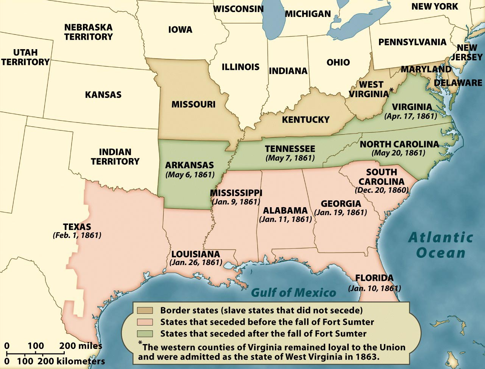

The Order of Secession, 1860-61

The states of the Confederacy seceded in two waves. The first took place between
Abraham Lincoln's election and inauguration, when the seven states of the Deep
South--whose economies were most dependent on slavery--left the Union. The second took
place following the attack on Fort Sumter, and President Lincoln's call for volunteers to
put down the rebellion. At that point, the four states of the Upper South--who depended on
slavery, but not nearly so much as their Deep South counterparts--also left the Union.
The fate of the four "border states"--Missouri, Kentucky, Maryland, and Delaware--was
an important question in the first year of the war, but ultimately it became clear that
they would remain with the Union (though each was heavily divided, and each had citizens
fighting on both sides of the war). As noted on the map, the counties of western
Virginia--where the slave population was sparse--remained loyal to the Union and were
admitted as the new state of West Virginia in 1863.
Note: Click on the image for a larger version.
Source: Eric Foner, Give Me Liberty! An American History (New York: W. W. Norton & Company, 2008).
|

{kind=link}